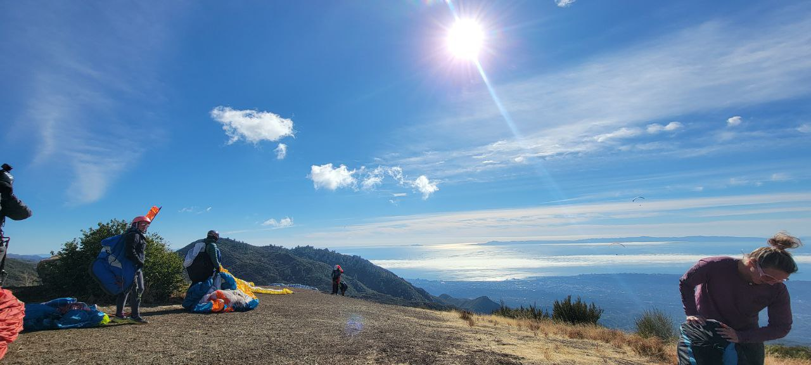
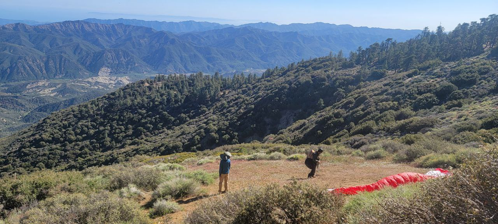

Primary Mountain
VOR
Main mountain launch for first mountain flights and XC.
Santa Barbara Soaring Association
Please take the time prior to flying SB sites to regularly review the site guidelines along with the no landing zone map. These can change over time and it is important to review the latest updates. Please adhere to these guidelines and plan flights accordingly.
Main SBSA launch and landing locations.
Landing Zone
Landing Zone
Designated beach landing area inside Santa Barbara limits.
Coastal Launch
Coastal ridge soaring in the Douglas Preserve. Lots of dogs!
Coastal Soaring
Ridge Soaring within SB Airport Airspace.

Mountain launch
Primary Santa Barbara launch for thermal flying.

Mountain Launch
Lower launch protected from North winds.
Secondary / Unaffiliated
Thermal and ridge option in Carpinteria.

Secondary Ridge
Carpinteria coastal ridge soaring site for all levels.

Secondary / Unaffiliated
Occasional experienced-pilot site in stronger SE setups.

Secondary / Unaffiliated
Secondary mountain site. Details pending.
Secondary / Unaffiliated
Ojai thermal flying site. Details pending.